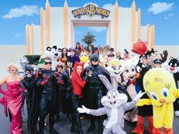

Warner Bros. Movie World (more commonly referred to as Movie World) is a movie studio theme park on the Gold Coast, Queensland, Australia. Its theme is based on the Warner Bros. film studio and related DC Comics properties. It is owned and operated by Village Roadshow via Village Roadshow Theme Parks since the take over from WarnerMedia. It is currently the only film-related park in Australia, and the oldest of three Warner Brothers movie theme parks worldwide. It was opened on June 3, 1991.
The park contains various movie-themed rides and attractions ranging from motion simulators to roller coasters and slow river rides. In addition, famous characters also patrol the park, allowing visitors the chance to take photos with them. These include Batman, Superman, Green Lantern, Austin Powers, Marilyn Monroe, Scooby-Doo and Shaggy and various Looney Tunes characters. Minor street shows including skits and singing performances are also present. The All-Star Parade showcases characters alongside vehicles and movie-themed floats.
There are a number of active film studios within the Movie World complex. House of Wax, the first Scooby-Doo film, the 2003 Peter Pan film, Ghost Ship, The Condemned and Fortress are amongst the many films and television series produced at Warner Roadshow Studios, adjoining Warner Bros. Movie World.
